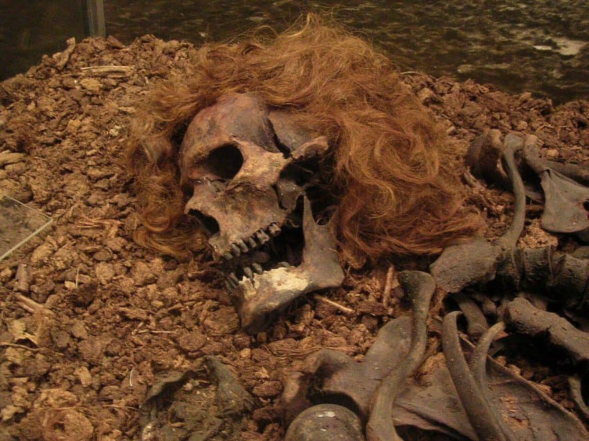
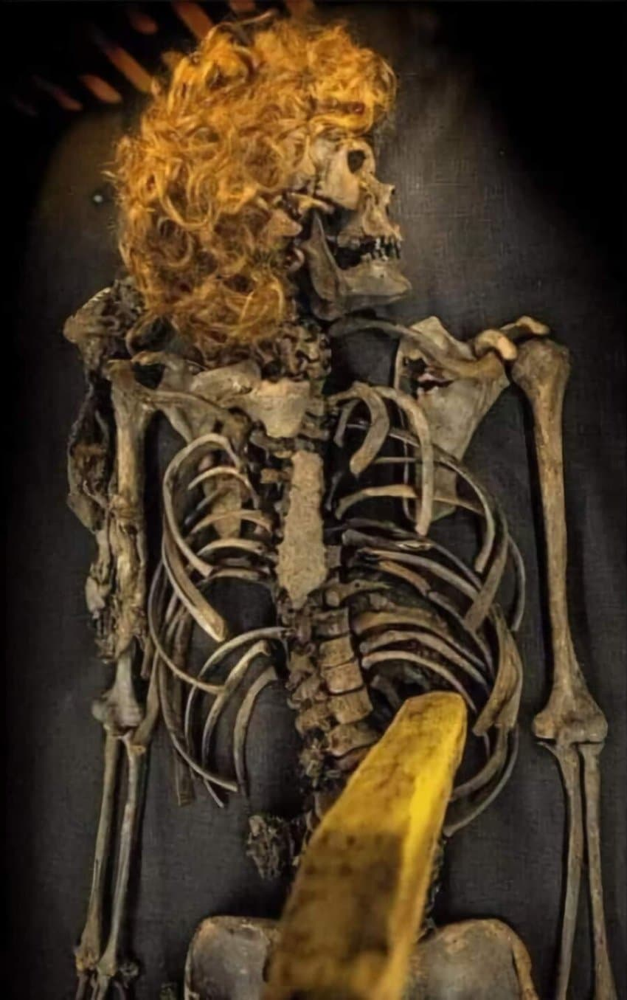
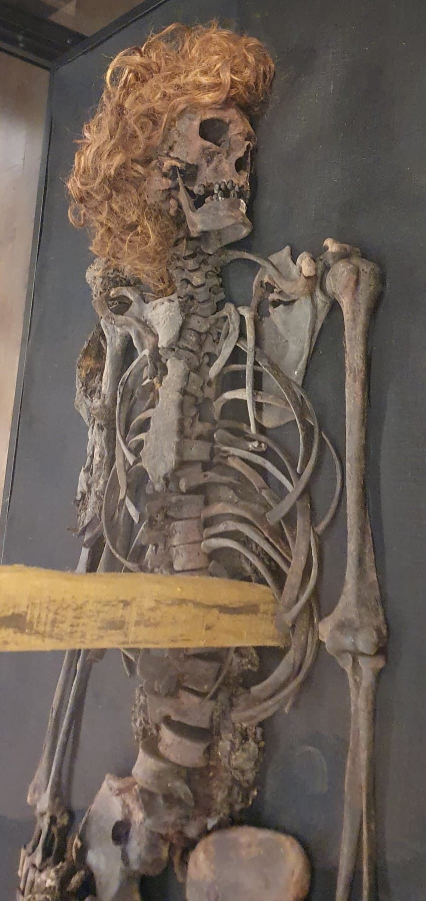
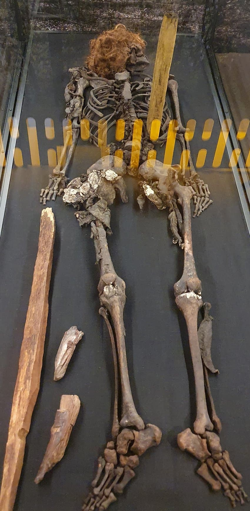
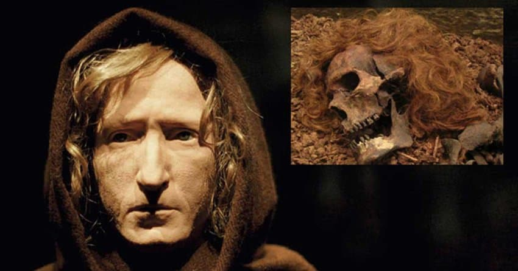
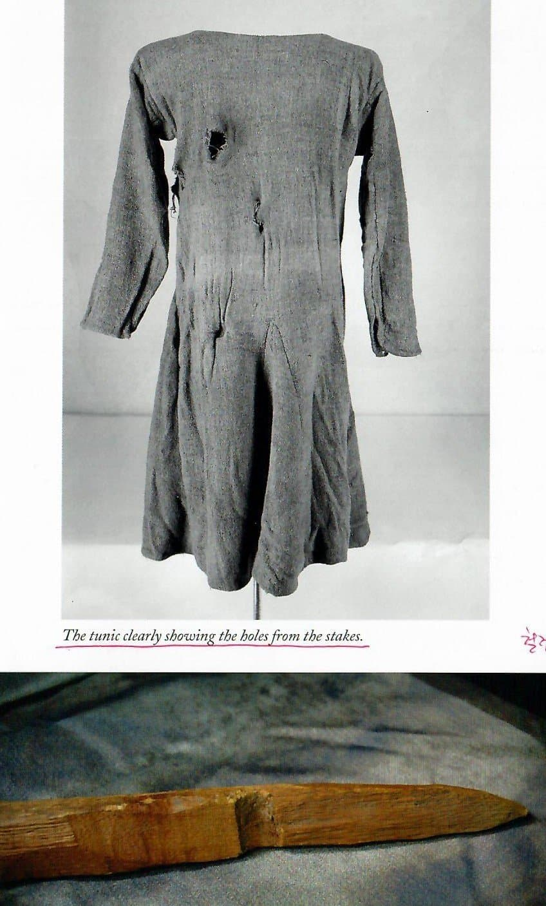

일명 복스텐맨
1940년대 스웨덴 늪지대에서 우연히 발견된 해골사체인데
존나 특이한점으로는 옷이 하나도 안썩은 백골 시신으로 발견됏다는거임
거기다 가슴 한가운데에 기다란 말뚝이 박힌채로 발견됨
연구 결과 700년전에 사망한 중세시대 30세 남성이였다고 함
이 시신이 발견된 동네가 1300년대 덴마크 스웨덴 전쟁 격전지였대
그리고 일반농민이 아니라 최소 성에 거주하던 관리 직이였을거라고 함
머리에 둔기를 3차례 얻어맞은 흔적이 발견되고 사망한 뒤에 늪지에 버려져서 말뚝박혔다고 한다


그리고 이 시체가 발견된 마을에서는 어느 전설이 내려옴
군 징집관이였던 하급관리가 농민의 분노를 사서 맞아죽엇는데
시체가 되살아나서 복수하지못하게
농민들이 시체를 늪지에 버리고 가슴에 말뚝박았다는 얘기가 전해져 내려옴
위에서 말했듯이 의복이 완벽하게 남아있는거도 엄청 특이해서 중세시대 연구하는데에 도움 됏다고 함
중세시대 남자들은
바지는 안입고 원피스에다가 롱부츠를 신는 대꼴패션으로 다녔다고ㄷㄷ
치마 걷으면 바로 꼬츄임ㄷ
댓글
수집 당시 댓글 131개
· ㅇㅂㅇ · 11.13 09:30:14
· ㅇㅇ · 11.13 09:34:43
· ㅇㅇ · 11.13 09:44:58
· ㅇㅇ · 11.13 09:49:46
· ㅇㅇ · 11.13 11:52:54
· 가츠 · 11.13 12:03:02
· 출롱사랑나라사랑 · 11.13 13:04:30
· ㅇㅇ · 11.13 13:57:15
· 펜도르 · 11.13 14:10:59
애기연지벌레 · 11.13 08:12:53
ㅇㅇ · 11.13 08:18:12
· ㅇㅇ · 11.13 08:53:08
· ㅇㅇ · 11.13 09:24:58
· ㅇㅇ · 11.13 13:17:08
· ㅇㅇ · 11.13 13:28:19
ㅇㅇ · 11.13 08:20:12
· ㅇㅇ · 11.13 08:31:16
ㅇㅇ · 11.13 08:20:39
ㅌㅌ · 11.13 08:23:53
ㅇㅇ · 11.13 08:25:47
oo · 11.13 08:30:33
ㅇㅇ · 11.13 08:31:13
ㅇㅇ · 11.13 08:33:07
×~× · 11.13 08:34:14
ㅇㅇ · 11.13 08:35:33
· ㅇㅇ · 11.13 08:53:40
삭제됨 · 11.13 08:36:15
· ㅇㅇ · 11.13 08:39:44
ㅇㅇ · 11.13 08:36:44
· ㅇㅇ · 11.13 08:44:56
ㅇㅇ · 11.13 08:37:31
ㅇㅇ · 11.13 08:39:20
ㅇㅇ · 11.13 08:39:45
· ㅇㅇ · 11.13 08:43:46
ㅇㅇ · 11.13 08:41:17
ㅇㅇ · 11.13 08:41:55
· ㅇㅇ · 11.13 08:42:39
· ㅇㅇ · 11.13 08:42:48
· ㅇㅇ · 11.13 08:43:43
· ㅇㅇ · 11.13 08:54:42
· ㅇㅇ · 11.13 09:02:46
· ㅇㅇ · 11.13 11:53:12
· 미코멧토 · 11.13 13:34:09
· ㅇㅇ · 11.13 15:57:17
ㅇㅇ · 11.13 08:43:34
ㅇㅇ · 11.13 08:44:35
헌트 · 11.13 08:47:58
말들갑왕 · 11.13 08:54:18
msnr · 11.13 09:02:59
Honsound · 11.13 09:06:17
ㅇㅇ · 11.13 09:10:21
꿍까 · 11.13 09:15:42
ㅇㅇ · 11.13 09:18:18
ㅇㅇ · 11.13 09:22:42
ㅇㅇ · 11.13 09:25:15
ㅇㅇ · 11.13 09:29:16
ㅇㅇ · 11.13 09:31:21
기술적잭스 · 11.13 09:33:59
ㅇㅇ · 11.13 09:34:02
ㅇㅇ · 11.13 09:36:28
ㅇㅇ · 11.13 09:36:43
· ㅇㅇ · 11.13 11:08:10
ㅇㅇ · 11.13 09:37:41
ㅇㅇ · 11.13 09:47:50
ㅇㅇ · 11.13 09:51:48
ㅇㅇ · 11.13 09:55:01
ㅇㅇ · 11.13 10:16:33
ㅇㅇ · 11.13 10:17:28
ㅇㅇ · 11.13 10:28:45
빙륜환 · 11.13 10:35:27
Doll · 11.13 10:35:41
ㅇㅇ · 11.13 10:46:49
ㅇㅇ · 11.13 10:47:05
ㅇㅇ · 11.13 11:19:53
ㅇㅇ · 11.13 11:54:58
ㅇㅇ · 11.13 12:03:48
ㅇㅇ · 11.13 12:28:10
ㅇㅇ · 11.13 13:08:43
ㅇㅇㅇ · 11.13 13:14:22
ㅇㅇ · 11.13 13:39:08
ㅇㅇ · 11.13 13:58:09
ㅇㅇ · 11.13 14:04:31
ㅇㅇ · 11.13 14:14:17
piyo · 11.13 14:21:50
ㅇㅇ · 11.13 14:36:53
ㅇㅇ · 11.13 14:38:42
ㅇㅇ · 11.13 14:40:42
ㅇㅇ · 11.13 15:32:26
coin6924 · 11.13 15:41:08
ㅇㅇ · 11.13 15:49:59
ㅇㅇ · 11.13 17:47:53
ㅇㅇ · 11.13 18:01:47
ㅇㅇ · 11.13 18:34:40
ㅇㅇ · 11.13 18:41:29
ㅇㅇ · 11.13 18:41:35
ㅇㅇ · 11.13 18:41:43
ㅇㅇ · 11.13 18:41:53
ㅇㅇ · 11.13 18:42:02
ㅇㅇ · 11.13 18:42:07
ㅇㅇ · 11.13 18:42:12
ㅇㅇ · 11.10 21:26:54
· ㅇㅇ · 11.13 09:49:34
아리솀 · 11.10 21:27:43
ㅇㅇ · 11.10 21:28:06
· ㅇㅇ · 11.10 21:28:40
· 이러다5넴다죽어 · 11.13 08:36:09
ㅇㅇ1 · 11.10 21:30:34
ㅇㅇ · 11.10 21:31:22
ㅇㅇ · 11.10 21:33:51
ㅇㅇ · 11.10 21:46:52
10콜맨 · 11.11 00:50:50
· 술담배여자도박 · 11.11 18:36:11
· 10콜맨 · 11.11 18:36:53
· 제몸을막만지셨잖아요 · 11.13 13:31:35
캐피탈리즘 · 11.13 08:11:32
ㅇㅇ · 11.13 08:11:39
ㅇㅇ · 11.13 08:12:37
· ㅇㅇ · 11.13 08:14:13
· ㅇㅇ · 11.13 08:14:26
· ㅇㅇ · 11.13 08:15:21
· ㅇㅇ · 11.13 08:17:27
· ㅇㅇ · 11.13 08:24:44
· ㅇㅇ · 11.13 08:32:48
· ㅇㅇ · 11.13 08:34:35
· ㅇㅇ · 11.13 08:45:05
· ㅇㅇ · 11.13 08:46:52
· ㅇㅇ · 11.13 08:54:21
· ㅇㅇ · 11.13 09:00:11
· ㅇㅇ · 11.13 09:04:40
· ㅇㅇ · 11.13 09:14:03
· ㅇㅇ · 11.13 09:22:08